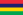

Table of Contents
Concept of money
Top ten terms
- Money : Any item and record acceptable for goods and services or for repayments of debts.
- Currency : When money is in actual use or circulation as a medium of exchange.
- Coins : A piece of actual metal which is standardize, and use as medium of exchange.
- Cash : Either money in physical currency form, or current assets accessible immediately.
- Wealth : It is the abundance of valuable material possessions or resources.
- Commodities : It is any substantially fungible, marketable item that satisfy wants or needs.
- Property : Something that belongs to someone either privately or publicly or collectively.
- Good and bad money : When two forms of commodity money are in circulation and as per law both have the same face value, the more valuable commodity is called good money.
- Virtual money : Any unregulated digital money, issued and controlled by its developers and which is used within a specific virtual community.
- Fortune : Big property and abundance of wealth.E.g. A successful IPO can make the promoters can make their fortune.
Top ten questions
- Can we really have batter system world wide? Why not?
- Why can government print enough money to end poverty?
- Why it is necessary to keep moving money?
- Why is modern paper currency not backed by gold or silver?
- What is virtual money capable of? Can we one day end the whole idea of physical money?
- How does global wealth fluctuate?
- What is the societies real wealth? Is it money?
- Who decide currency exchange rates?
- Why do we pay taxes at all?
Etymology
Money : From a temple of Juno Moneta, Rome(mint located here).
Juno-Goddess Uni(one),Moneta-from latin word “Monēta” :to warn
Currency : Latin currentis/currens
Currens- Moving or traveling
Wealth : Weal-Stem(from English)
Fungible : Latin fungibilis-to perform
Dollar : Joachimsthaler→thaler→daler→dollar
Joachimsthaler- a silver coin from Joachim's valley.
Rupee : uruppu-(proto-Tamil)-Rupa(shape)Sanskrit-rūpya(silver coin)Sanskrit
Monetary evolution of mankind
| Monetary Parameter | ||||||||||||||
|---|---|---|---|---|---|---|---|---|---|---|---|---|---|---|
| Aim of mankind | Complexity(relative) | Production of goods | Distribution of goods | Services economy | Level of consumption | Gifting economy | Barter economy | Market based economy | Commodity money | Fiat money | Virtual currency | State role | ||
| Mankind | Primordial man(2 lac. y.a) | To not die | 0 | - | - | - | - | ✓ | - | - | - | - | - | - |
| Hunters-Gatherers(Gift economy(40,000 y.a) | To survive | 1 | - | - | - | - | ✓ | ✓ | - | - | - | - | - | |
| Primitives agriculture societies(Barter economy)(10,000 y.a) | Survive and grow | 2 | ✓ | - | ✓ | ✓ | ✓ | ✓ | - | - | - | - | - | |
| Mankind | Agricultural civilization(Barter economy)(7000 y.a) | Settle down and grow | 3 | ✓ | ✓ | ✓ | ✓ | - | ✓ | ✓ | ✓ | - | - | ✓ |
| Kingdoms | Prosperity and expansion | 4 | ✓ | ✓✓ | ✓✓ | ✓✓ | - | ✓ | ✓ | ✓ | - | - | ✓✓ | |
| Industrial nation-states(18th century onward) | Domination | 8 | ✓✓ | ✓✓✓ | ✓✓✓ | ✓✓✓ | - | - | ✓ | ✓ | ✓ | - | ✓✓✓ | |
| Mankind | Modern global world(1970's onward) | Mass-consumption,Spirituality,Prosperity | 16 | ✓✓✓ | ✓✓✓✓✓ | ✓✓✓✓✓ | ✓✓✓✓✓ | - | - | ✓✓✓ | - | ✓ | ✓ | ✓✓ |
Creation of money-facts,laws
The relation between the human society and economy types
↱ Strongly regulated by State = Command economy
Human + production/distribution/ = Economic system ↦ Market driven = Free market economy
society consumption of goods ↙ ↘ ↳ Green concerns driven = Green economy
↙ ↘
low level advanced level
↖ ↗
↖ ↗
↖ ↗
Culture+Technology/
Education+Innovation
Poverty can not be removed by money alone; in long run poverty can only be eliminated by development of capabilities.
Gift economy
In most basic survival societies, few goods are produced. Needs are limited. Wants are non-existence. Hence valuables are neither traded or sold, but are given. No rewards are expected. E.g. Giving arms to Buddhist monks.(Thervad Buddhism , Thailand); dana-puniya in Hinduism(To rid one-self from sins)
Batter economy
Goods and services are directly exchanged for other goods and service without any medium of exchange. The exchange is immediate and is not delayed.
| Commodity exchange | Gift exchange |
|---|---|
| Immediate exchange | Delayed exchange |
| Alienable goods | Inalienable goods |
| Actors independent | Actors dependent |
| Quantitative relationship | Qualitative relationship |
| Between objects | Between people |
Negatives of batter system
- An inefficient system due to “double coincidence of wants”.
- No common measure of value.
- Differed payments problem.
- Storing wealth very difficult.
Positives of batter system
- Very useful in hyper-inflation (especially for poor).
- Very good for unknown parties.
Money and its four functions
A per Williams Stanley Jevons, the four functions are:
Money's is a matter of functions four
A medium,a measure,standard,a store.
- A medium of exchange- can easily compare the values of dissimilar.
- A measure of values- It is standard common denomination of trade.
- A standard of deferred payment- Use to settle debts(but it can be badly effected by inflation,devaluation,etc.)
- A store of value- It can reliably saved,stored and retrieved.
Three is now considered part of 1,2 and 4.
Money supply
In economics, money referees to any financial instrument that can fulfill the four functions of money. If you consider all these financial instruments, it becomes the nations money supply.Thus money supply is the total amount of monetary assets at given time.If you add up the money supply of all these, it becomes the nations monetary aggregate.
Money supply = Currency,bank notes or coins + Bank money
Bank money is the biggest component of money supply.
Due to the presence of the CRR/SLR etc.,Indian banking is called fractional reserve banking.
Commodity money
- Earlier money was made of commodities that had value had in itself, as well as in the money form.
- People accepted it as money due to the value of the objects.
- the user of such currency perceived value directly.
- E.g. shells,cocoa beans,salt,copper,gold
Historical example
During the 16th Mahajanapada era in ancient India(6th BC to 4th BC) a 3-tier system of gold,silver and copper coins was used.
Gold coins-for state purposed
Silver coins-for taxes,contracts,etc.
Copper coins-day to day used.
The mystery of Indus valley civilization coinage(3000 BC), no consensus yet if the seals found are coins.
Ancient India had huge trading with Arabs,Romans,Greeks and the Chinese. Coins hordes of Rome are found in south India.
The Maurya empire coins (3rd century BC) made of silver(रूप्यरूप (Rupyrup)depicting wheel and elephants).
Coins of Gupta empire(4th to 6th century AD)-Depicts kings and deities.
The earliest Kushan gold coins issued Vima Kadphises.
In Sweden (1650) there were two types of coins.
- Koppermynt- Daler in copper
- Silvermynt- Daler in silver
Hence the silver coins were hoarded and only copper coins were available. But the size was heavy and large due to low value. Hence paper money was introduced in 1661 by Stock Holms Banco.
Benefits- No transportation problem,easily enable the stock in companies.
It collapsed very soon due to mismatch between issued notes and available coins.
In 1792 the US government reported to the Congress the exact weight of silver in the Spanish dollar coins in USA-Pure silver 24.057 gram.
The Maratha coinage came into existence 1707 AD.Early British coinage evolved as the companies rule gave way to the crown rules post 1857.An E.g. Queen Victoria Mohur 1862-Worth 15 Rupee.
All coins before 1857-By BEIC
After 1857-By the crown.
The first republic of India coins were issued 1950.
During the 1st world war due to lack silver the Britesh launched paper currency in India first time.
Due to the 2nd world war there was lack of silver,the coins became alloyed.
Gresham's law
Bad money always drives out good money.For E.g. If two types of commodity money are in circulation,and as per law both of them have same face value, the more valuable commodity will disappear.
Fiat money
When physical commodity are very hard to mine and use as coins, then government have to issue Fiat money. It may be printed on paper. And since it is guaranteed by government it becomes legal tender. E.g. Indian Rupee.
| Countries | Currency | ISO 4217 code | Its exchange rate to the US Dollar as of 2016-03-02 |
|---|---|---|---|
| India | Indian rupee | INR | 67.66 Indian Rupees |
| Nepal | Nepalese rupee | NPR | 108.30 Nepalese Rupees |
 Maldives Maldives | Maldivian rufiyaa | MVR | 15.40 Maldivian rufiyaa |
| Indonesia | Indonesian rupiah | IDR | 13,270.00 Indonesian Rupiahs |
 Pakistan Pakistan | Pakistani rupee | PKR | 104.75 Pakistani rupees |
| Sri Lanka | Sri Lankan rupee | LKR | 144.75 Sri Lankan Rupees |
|  Mauritius | Mauritian rupee | MUR | 35.98 Mauritian Rupees |
 Seychelles Seychelles | Seychellois rupee | SCR | 13.30 Seychellois rupees |
Its Misuse can lead to hyper-inflation.E.g. Weimar Germany(1921-1924).Why it happened- Kaiser Wilhelm 2nd had assumed that Germany would win WW1 and he borrowed heavily, assuming he will acquire many rich territories and he will easily payback. But Germany lost. Before WW1 Germany had gold standard(currency convertibility in gold). They suspended it and borrowed. In contrast the French laid income taxes on citizens.
First paper currency in China.-First use by Song dynasty(10th century AD).Took lot of time for widespread standardization.
Gold Standard- A monetary system in which the standard economic unit of account is based on the fixed quantity of gold. It was dumped by all the countries in 1970's as the amount of the gold for the economic expansion happening was impossible to found.
Britain woods 1945
Held between USA,Canada,Japan,Western Europe and Australia.
All nations tied there currency to gold.
It was a monetary agreement.
Money Laundering-When criminals try to convert there ill-gotten money into legal money.
3 steps are involved.
The India law to check to money laundering is PMLA(Prevention of money laundering act) 2002.
Superdollar-A fraud 100$ bill that is very hard to detect.
Money supplied any country is controlled by the central banks.US-Federal bank,EU-European central Bank,Japan-Bank of Japan,England-Bank of England,China-People's bank of China.
Modern money
Virtual currency-A good example is bitcoin. Its a virtual currency which is created and controlled solely by its developers. It is accepted and used by a virtual community.It is built on the Blockchain concept.In 2013 RBI issued a cation against Bitcoin.In 2015 RBI accepted the blockchain technique very good.